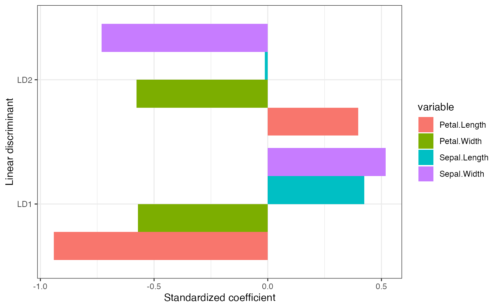

Augmented implementation of linear discriminant analysis
lda-ord.RdThis function replicates MASS::lda() with options to retain
elements useful to the tbl_ord class and biplot calculations.
lda_ord(x, ...) # S3 method for formula lda_ord(formula, data, ..., subset, na.action) # S3 method for data.frame lda_ord(x, ...) # S3 method for matrix lda_ord(x, grouping, ..., subset, na.action) # S3 method for default lda_ord(x, grouping, prior = proportions, tol = 1e-04, method = c("moment", "mle", "mve", "t"), CV = FALSE, nu = 5, ..., ret.x = FALSE, ret.grouping = FALSE, axes.scale = "unstandardized")
Arguments
| x | (required if no formula is given as the principal argument.) a matrix or data frame or Matrix containing the explanatory variables. |
|---|---|
| ... | arguments passed to or from other methods. |
| formula | A formula of the form |
| data | Data frame from which variables specified in |
| subset | An index vector specifying the cases to be used in the training sample. (NOTE: If given, this argument must be named.) |
| na.action | A function to specify the action to be taken if |
| grouping | (required if no formula principal argument is given.) a factor specifying the class for each observation. |
| prior | the prior probabilities of class membership. If unspecified, the class proportions for the training set are used. If present, the probabilities should be specified in the order of the factor levels. |
| tol | A tolerance to decide if a matrix is singular; it will reject variables
and linear combinations of unit-variance variables whose variance is
less than |
| method |
|
| CV | If true, returns results (classes and posterior probabilities) for leave-one-out cross-validation. Note that if the prior is estimated, the proportions in the whole dataset are used. |
| nu | degrees of freedom for |
| ret.x, ret.grouping | Logical; whether to retain as attributes the data
matrix ( |
| axes.scale | Character string indicating how to left-transform the
|
Details
Linear discriminant analysis relies on an eigendecomposition of the product \(W^{-1}B\) of the inverse of the within-class covariance matrix \(W\) by the between-class covariance matrix \(B\). This eigendecomposition can be motivated as the right (\(V\)) half of the singular value decomposition of the matrix of Mahalanobis distances between the cases after "sphering" (linearly transforming them so that the within-class covariance is the identity matrix). LDA are not traditionally represented as biplots, with some exceptions (Gardner & le Roux, 2005; Greenacre, 2010, p. 109--117).
LDA is implemented as MASS::lda() in the MASS package, in which the
variables are transformed by a sphering matrix \(S\) (Venables & Ripley,
2003, p. 331--333). The returned element scaling contains the
unstandardized discriminant coefficients, which define the discriminant
scores of the cases and their centroids as linear combinations of the
original variables.
The discriminant coefficients constitute one of several possible choices of
axes for a biplot representation of the LDA. The slightly modified function
lda_ord() provides additional options:
The standardized discriminant coefficients are obtained by (re)scaling the coefficients by the variable standard deviations. These coefficients indicate the contributions of the variables to the discriminant scores after controlling for their variances (ttnphns, 2013).
The variables' contributions to the Mahalanobis variance along each discriminant axis are obtained by transforming the coefficients by the inverse of the sphering matrix \(S\). Because the contribution biplot derives from the eigendecomposition of the Mahalanobis distance matrix, the projections of the centroids and cases onto the variable axes approximate their variable values after centering and sphering (Greenacre, 2013).
References
Gardner S & le Roux NJ (2005) "Extensions of Biplot Methodology to Discriminant Analysis". Journal of Classification 22(1): 59--86. doi: 10.1007/s00357-005-0006-7 https://link.springer.com/article/10.1007/s00357-005-0006-7
Greenacre MJ (2010) Biplots in Practice. Fundacion BBVA, ISBN: 978-84-923846. https://www.fbbva.es/microsite/multivariate-statistics/biplots.html
Venables WN & Ripley BD (2003) Modern Applied Statistics with S, Fourth Edition. Springer Science & Business Media, ISBN: 0387954570, 9780387954578. http://www.bagualu.net/wordpress/wp-content/uploads/2015/10/Modern_Applied_Statistics_With_S.pdf
ttnphns (2013) Answer to "Algebra of LDA. Fisher discrimination power of a variable and Linear Discriminant Analysis". CrossValidated, accessed 2019-07-26. https://stats.stackexchange.com/a/83114/68743
Greenacre M (2013) "Contribution Biplots". Journal of Computational and Graphical Statistics, 22(1): 107--122. https://amstat.tandfonline.com/doi/full/10.1080/10618600.2012.702494
Examples
#> relwt glufast glutest instest sspg group #> 1 0.81 80 356 124 55 Normal #> 2 0.95 97 289 117 76 Normal #> 3 0.94 105 319 143 105 Normal #> 4 1.04 90 356 199 108 Normal #> 5 1.00 90 323 240 143 Normal #> 6 0.76 86 381 157 165 Normal#> Call: #> lda(group ~ ., data = heplots::Diabetes) #> #> Prior probabilities of groups: #> Normal Chemical_Diabetic Overt_Diabetic #> 0.5241379 0.2482759 0.2275862 #> #> Group means: #> relwt glufast glutest instest sspg #> Normal 0.9372368 91.18421 349.9737 172.6447 114.0000 #> Chemical_Diabetic 1.0558333 99.30556 493.9444 288.0000 208.9722 #> Overt_Diabetic 0.9839394 217.66667 1043.7576 106.0000 318.8788 #> #> Coefficients of linear discriminants: #> LD1 LD2 #> relwt 1.3624356881 -3.784142444 #> glufast -0.0336487883 0.036633317 #> glutest 0.0125763942 -0.007092017 #> instest -0.0001022245 -0.006173424 #> sspg 0.0042431866 0.001134070 #> #> Proportion of trace: #> LD1 LD2 #> 0.8812 0.1188as_tbl_ord(diabetes_lda) %>% augment() %>% mutate_u(discriminant = ifelse(! .supplement, "centroid", "case")) %>% print() -> diabetes_lda#> # A tbl_ord of class 'lda': (148 x 2) x (5 x 2)' #> # 2 coordinates: LD1 and LD2 #> # #> # U: [ 148 x 2 | 6 ] #> LD1 LD2 | .name .grouping .prior .counts #> | <chr> <fct> <dbl> <int> #> 1 -1.75 0.400 | 1 Norm… Normal 0.524 76 #> 2 0.340 -1.38 | 2 Chem… Chemical… 0.248 36 #> 3 3.66 0.580 | 3 Over… Overt_Di… 0.228 33 #> 4 -1.72 0.663 | 4 1 Normal NA NA #> 5 -2.85 1.30 | 5 2 Normal NA NA #> # … with 143 more rows, and 2 more #> # variables: .supplement <lgl>, #> # discriminant <chr> #> # #> # V: [ 5 x 2 | 1 ] #> LD1 LD2 | .name #> | <chr> #> 1 1.36 -3.78 | 1 relwt #> 2 -0.0336 0.0366 | 2 glufast #> 3 0.0126 -0.00709 | 3 glutest #> 4 -0.000102 -0.00617 | 4 instest #> 5 0.00424 0.00113 | 5 sspgggbiplot(diabetes_lda) + theme_bw() + geom_u_point(aes(shape = .grouping, size = discriminant), alpha = .5) + geom_v_axis(color = "#888888") + ggtitle("Column-standardized LDA biplot of Reaven & Miller diabetes data")#> Warning: Using size for a discrete variable is not advised.# Unstandardized, standardized, and de-sphered LDAs of Anderson Iris data # data centroid iris_centroid <- t(apply(iris[, 1:4], 2, mean)) # custom biplot lda_biplot <- function(lda) { lda %>% as_tbl_ord() %>% augment() %>% mutate_u( species = .grouping, discriminant = ifelse(! .supplement, "centroid", "case") ) %>% ggbiplot() + theme_bw() + geom_u_point(aes( color = .grouping, size = discriminant, alpha = discriminant )) + geom_v_vector(color = "#888888") + geom_v_text_radiate(aes(label = .name), size = 3) + scale_color_brewer(type = "qual", palette = 2) } # Unstandardized discriminant coefficients define the discriminant axes as # linear combinations of the centered variables iris_lda <- as_tbl_ord(lda_ord(iris[, 1:4], iris[, 5], axes.scale = "unstandardized")) # linear combinations of centered variables print(sweep(iris_lda$means, 2, iris_centroid, "-") %*% get_v(iris_lda))#> LD1 LD2 #> setosa 7.607600 0.2151330 #> versicolor -1.825049 -0.7278996 #> virginica -5.782550 0.5127666#> LD1 LD2 #> setosa 7.607600 0.2151330 #> versicolor -1.825049 -0.7278996 #> virginica -5.782550 0.5127666# unstandardized coefficient LDA biplot lda_biplot(iris_lda) + ggtitle("Unstandardized coefficient biplot of iris LDA")#> Warning: Using size for a discrete variable is not advised.#> Warning: Using alpha for a discrete variable is not advised.# Standardized discriminant coefficients permit comparisons across the variables iris_lda <- as_tbl_ord(lda_ord(iris[, 1:4], iris[, 5], axes.scale = "standardized")) # standardized variable contributions to discriminant axes tidy(iris_lda, .matrix = "v") %>% dplyr::mutate(variable = .name) %>% tidyr::gather(discriminant, coefficient, LD1, LD2) %>% ggplot(aes(x = discriminant, y = coefficient, fill = variable)) + geom_bar(position = "dodge", stat = "identity") + labs(y = "Standardized coefficient", x = "Linear discriminant") + theme_bw() + coord_flip()# standardized coefficient LDA biplot lda_biplot(iris_lda) + ggtitle("Standardized coefficient biplot of iris LDA")#> Warning: Using size for a discrete variable is not advised.#> Warning: Using alpha for a discrete variable is not advised.# Variable contributions (de-sphered discriminant coefficients) recover the # inner product relationship with the centered class centroids iris_lda <- as_tbl_ord(lda_ord(iris[, 1:4], iris[, 5], axes.scale = "contribution")) # symmetric square root of within-class covariance C_W_eig <- eigen(cov(iris[, 1:4] - iris_lda$means[iris[, 5], ])) C_W_sqrtinv <- C_W_eig$vectors %*% diag(1/sqrt(C_W_eig$values)) %*% t(C_W_eig$vectors) # product of matrix factors (scores and loadings) print(get_u(iris_lda, .supplement = FALSE) %*% t(get_v(iris_lda)))#> [,1] [,2] [,3] [,4] #> setosa 0.3061785 2.593874 -5.861269 -3.9959956 #> versicolor -0.1774657 -1.154286 1.457859 0.5653316 #> virginica -0.1287128 -1.439587 4.403411 3.4306640# "asymmetric" square roots of Mahalanobis distances between variables print(sweep(iris_lda$means, 2, iris_centroid, "-") %*% C_W_sqrtinv)#> [,1] [,2] [,3] [,4] #> setosa 0.3103442 2.629165 -5.941014 -4.0503629 #> versicolor -0.1798802 -1.169991 1.477693 0.5730232 #> virginica -0.1304640 -1.459174 4.463321 3.4773397# contribution LDA biplot lda_biplot(iris_lda) + ggtitle("Contribution biplot of iris LDA")#> Warning: Using size for a discrete variable is not advised.#> Warning: Using alpha for a discrete variable is not advised.